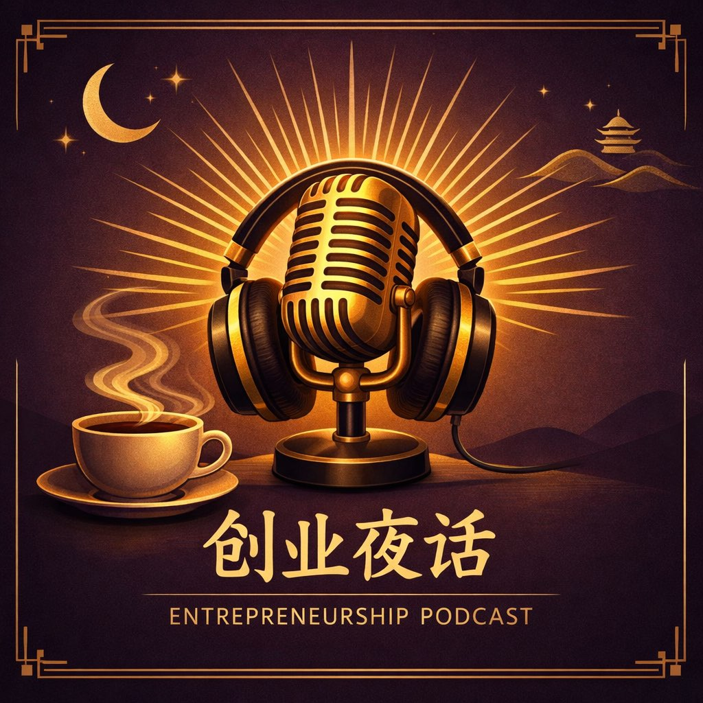
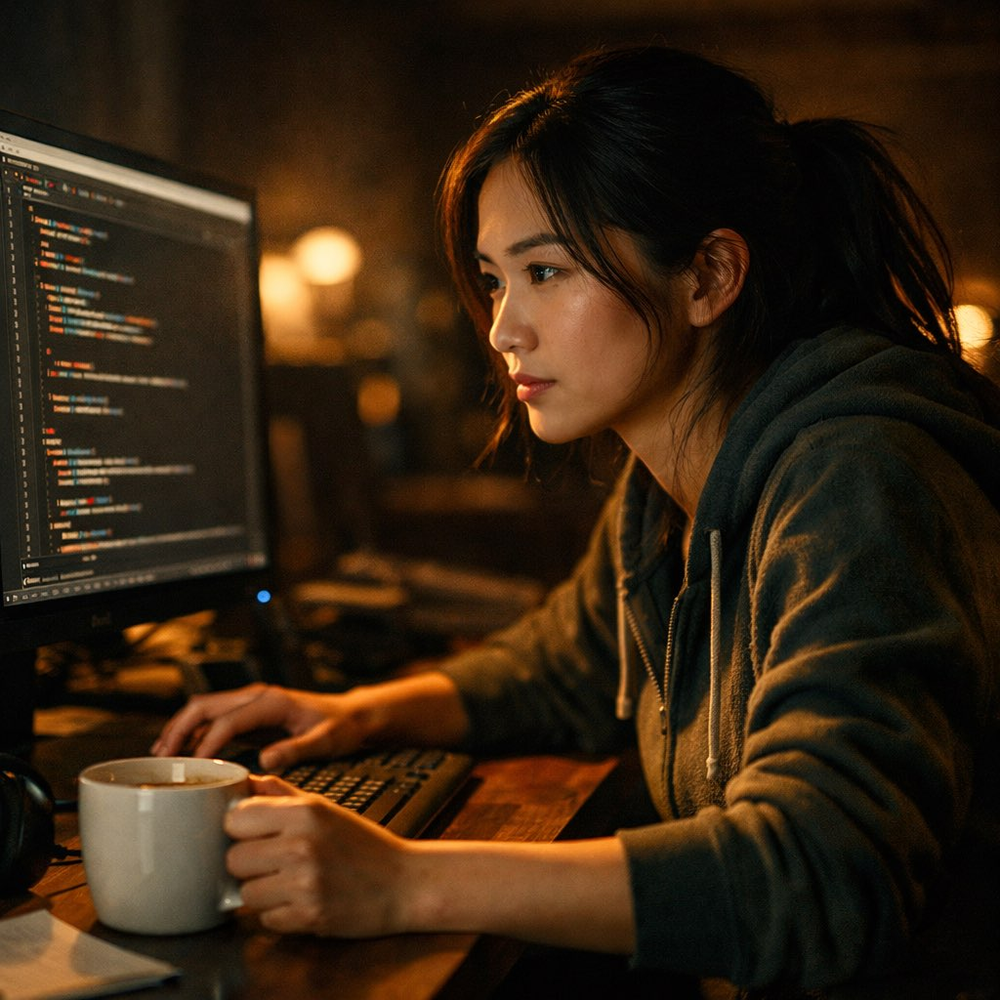

「那天凌晨两点，最后一个合伙人发消息说要走。」
我盯着屏幕上跑了一半的模型训练进度条。62%。再跑下去还要烧3000块GPU费。
我差点按了终止。手指悬在键盘上方整整五分钟。
最后没按——不是因为勇敢。是因为电脑卡了，终止按钮点不动。
第二天早上醒来，模型跑完了。精度比上一版高了11个点。我拿着结果去见了一个客户，当场签了合同。
后来我跟朋友讲这件事，她问我：「所以你是被电脑的bug救了？」
我说：「对，但我更愿意叫它'命运的缓冲区溢出'。」
「我白天是一家AI公司的CEO，晚上是一家小面馆的厨师。」
不是斜杠青年，是没钱请厨师。面馆是老婆开的，我不帮忙她一个人忙不过来。
差点放弃是去年冬天。投资人说：「你这个年龄，转型AI有点晚了。」
那天晚上在厨房切牛肉，切着切着突然就哭了。老婆还以为我切到手。
但你知道转折是什么吗？是一碗排骨面。一个常来吃面的客人，无意间聊起他们公司正好需要我们做的那个AI工具。
他成了我的第一个种子客户。现在每周还来吃面，但已经不用我亲自下厨了。
「差点放弃那天，我在停车场坐了两个小时。」
给所有投资人发了最后一版BP。10个人，9个已读不回，1个回了「再看看」。
我跟老公说：「如果今天还没消息，我就回去上班。」他握着我的手没说话。
就在我准备发动车的时候，手机亮了。是那个说「再看看」的投资人：
「方案我认真看了，约个时间细聊？」
我老公看了一眼手机，转过头，眼眶红了。他说：「你看，一个就够了。」
后来那笔钱到账的那天，我们又开车去了那个停车场。坐了一会儿，什么都没说。但那两个小时和之前完全不一样。